Geschenkbox-Karte mit Tasche: Druckvorlage Weihnachten mit 4 Figuren für Gutscheine (Klasse 1–4)
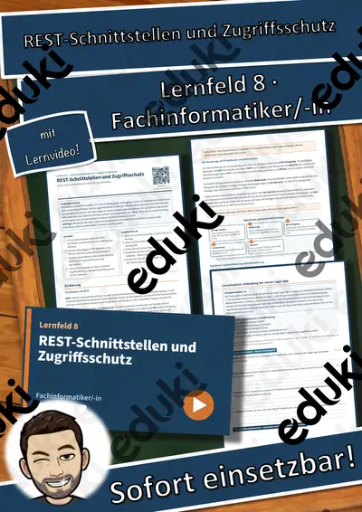
LF 8 Fachinformatiker/-in: REST-Schnittstellen und Zugriffsschutz – Übungen, Lösungen + Lernvideo

Klammerkarten: Insekten und Krabbeltiere – Klammerkarten – Klasse 1–4
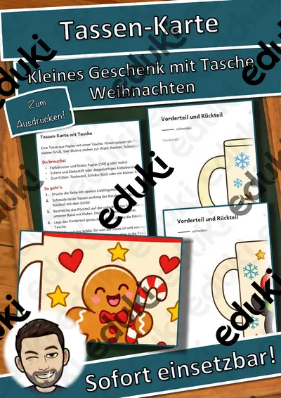
Tassen-Karte mit Tasche: Druckvorlage für kleine Weihnachtsgeschenke mit 4 Motiven (Klasse 1–4)

LF 6 Zahnmedizinische Fachangestellte: Postoperative Hinweise und Verordnungen – Übungen, Lösungen + Lernvideo
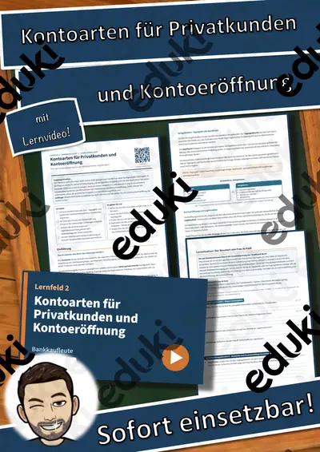
LF 2 Bankkaufleute: Kontoarten für Privatkunden und Kontoeröffnung – Übungen, Lösungen + Lernvideo
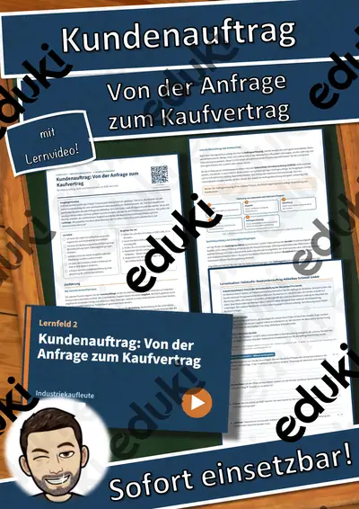
LF 2 Industriekaufleute: Kundenauftrag: Von der Anfrage zum Kaufvertrag – Übungen, Lösungen + Lernvideo

Himmel und Hölle: Im Wald – Himmel und Hölle – Klasse 1–4
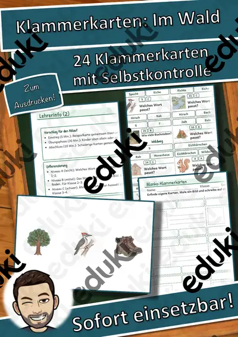
Klammerkarten: Im Wald – Klammerkarten – Klasse 1–4

Himmel und Hölle: Einkaufen – Himmel und Hölle – Klasse 1–4

Klammerkarten: Einkaufen – Klammerkarten – Klasse 1–4
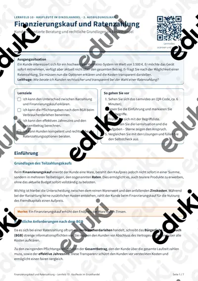
LF 10 Kaufleute im Einzelhandel: Finanzierungskauf und Ratenzahlung – Übungen, Lösungen + Lernvideo
LF 6 Fachinformatiker/-in: Service-Level-Agreements (SLA) in der IT-Praxis – Übungen, Lösungen + Lernvideo
LF 8 Zahnmedizinische Fachangestellte: Mundhygieneunterweisung und Adhärenzförderung – Übungen, Lösungen + Lernvideo

Himmel und Hölle: Im Restaurant – Himmel und Hölle – Klasse 1–4
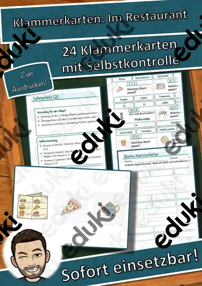
Klammerkarten: Im Restaurant – Klammerkarten – Klasse 1–4

Himmel und Hölle: Familie – Himmel und Hölle – Klasse 1–4

Klammerkarten: Familie – Klammerkarten – Klasse 1–4
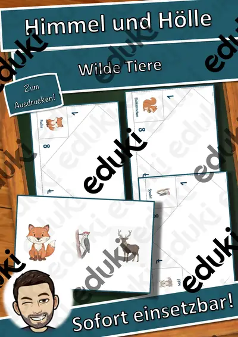
Himmel und Hölle: Wilde Tiere – Himmel und Hölle – Klasse 1–4

Klammerkarten: Wilde Tiere – Klammerkarten – Klasse 1–4

Himmel und Hölle: Fahrzeuge – Himmel und Hölle – Klasse 1–4
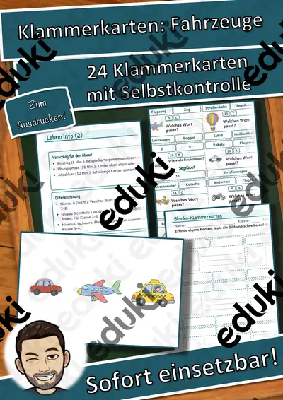
Klammerkarten: Fahrzeuge – Klammerkarten – Klasse 1–4

Himmel und Hölle: Kleidung – Himmel und Hölle – Klasse 1–4

Klammerkarten: Kleidung – Klammerkarten – Klasse 1–4
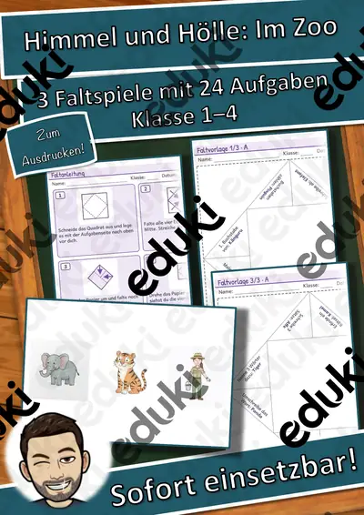
Himmel und Hölle: Im Zoo – Himmel und Hölle – Klasse 1–4

Klammerkarten: Im Zoo – Klammerkarten – Klasse 1–4

Himmel und Hölle: Ostern – Himmel und Hölle – Klasse 1–4
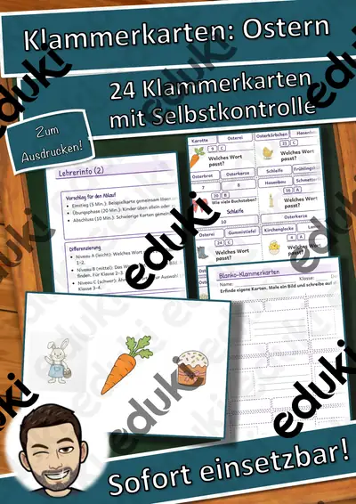
Klammerkarten: Ostern – Klammerkarten – Klasse 1–4

Himmel und Hölle: Frühling – Himmel und Hölle – Klasse 1–4

Klammerkarten: Frühling – Klammerkarten – Klasse 1–4

Himmel und Hölle: Sommer – Himmel und Hölle – Klasse 1–4
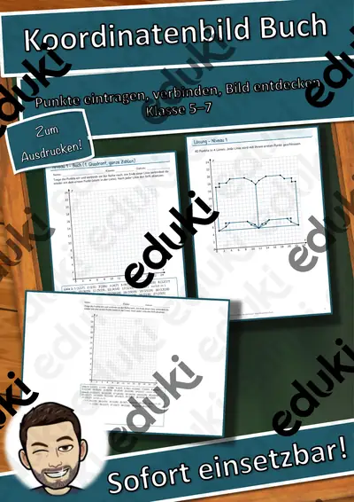
Koordinatenbild Buch: Punkte eintragen, verbinden, Bild entdecken, Klasse 5–7

Himmel und Hölle: Wetter – Himmel und Hölle – Klasse 1–4
Koordinatenbild Fäustling: Punkte eintragen, verbinden, Bild entdecken, Klasse 5–7
Koordinatenbild Pilz: Punkte eintragen, verbinden, Bild entdecken, Klasse 5–7
Koordinatenbild Küken: Punkte eintragen, verbinden, Bild entdecken, Klasse 5–7
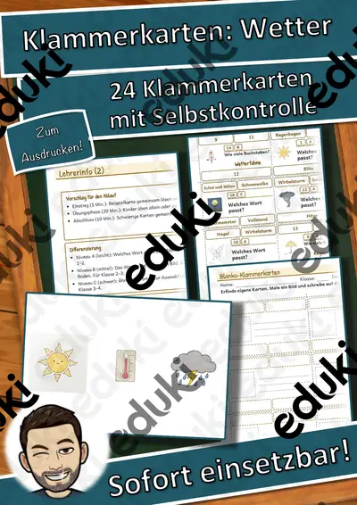
Klammerkarten: Wetter – Klammerkarten – Klasse 1–4
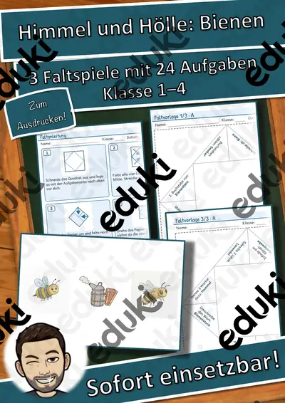
Himmel und Hölle: Bienen – Himmel und Hölle – Klasse 1–4
Koordinatenbild Taube: Punkte eintragen, verbinden, Bild entdecken, Klasse 5–7
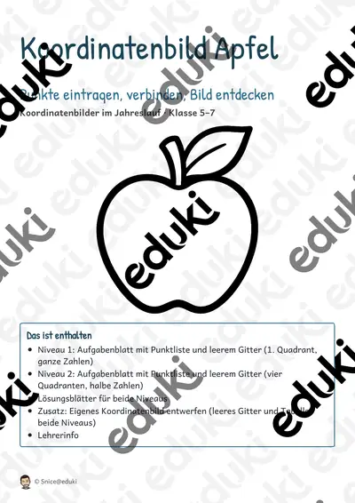
Koordinatenbild Apfel: Punkte eintragen, verbinden, Bild entdecken, Klasse 5–7

Klammerkarten: Bienen – Klammerkarten – Klasse 1–4
Koordinatenbild Eiswaffel: Punkte eintragen, verbinden, Bild entdecken, Klasse 5–7

Himmel und Hölle: Kochen und Backen – Himmel und Hölle – Klasse 1–4

Koordinatenbild Ahornblatt: Punkte eintragen, verbinden, Bild entdecken, Klasse 5–7
Koordinatenbild Luftballon: Punkte eintragen, verbinden, Bild entdecken, Klasse 5–7

Klammerkarten: Kochen und Backen – Klammerkarten – Klasse 1–4

Klammerkarten: Obst und Gemüse – Klammerkarten – Klasse 1–4

Escape-Room Größen & Flächen Klasse 5 – Mathematik Klasse 5 Gymnasium: 6 Stationen, 2 Schlösser
Keine Materialien gefunden – versuch einen anderen Suchbegriff oder Filter.